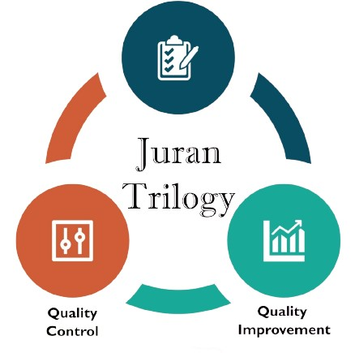
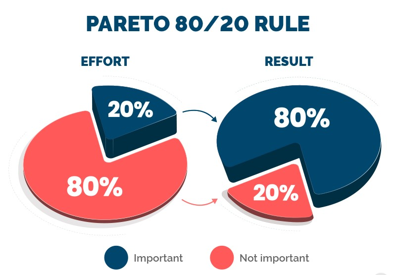
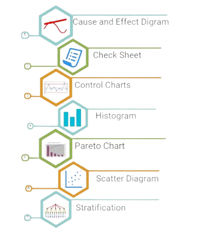
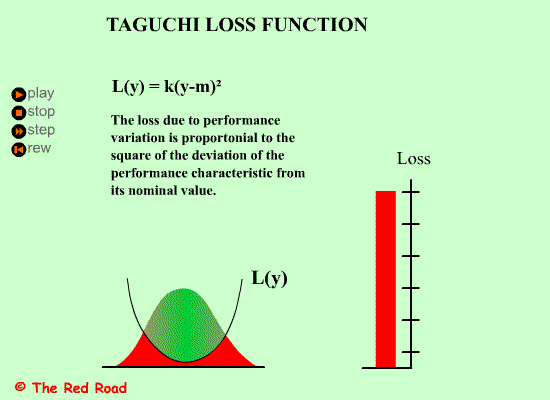
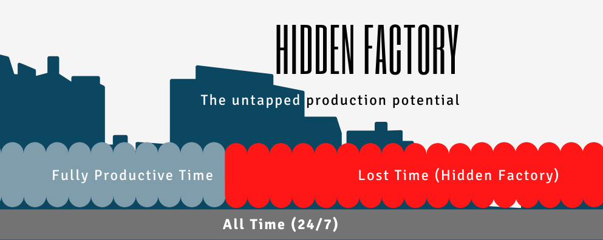
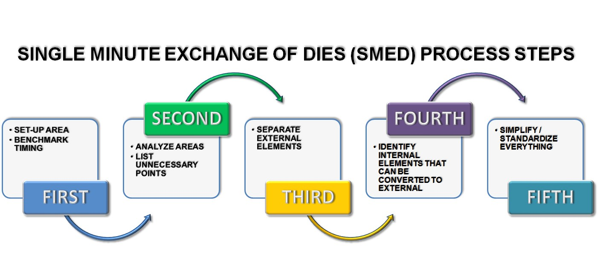
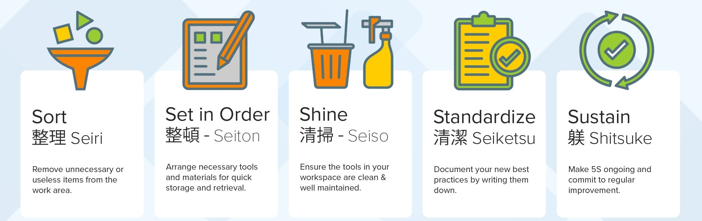

Quality Management Pioneers
Exploring the lives and contributions of those who shaped modern quality practices
Discover the GurusWelcome to Quality Gurus
Quality management as we know it today is built upon the philosophies, theories, and methods developed by pioneering thinkers from around the world. This educational resource is dedicated to exploring the lives and contributions of these influential figures who revolutionized how organizations approach quality.
From W. Edwards Deming's statistical process control to Kaoru Ishikawa's cause-and-effect diagrams, these quality gurus have provided frameworks and tools that continue to shape business practices globally. Their work spans decades and crosses industries, but all share a common goal: achieving excellence through systematic approaches to quality.
Featured Quality Gurus


Quality Gurus Profiles
Learn about the visionaries who shaped the field of quality management through their innovative approaches, methodologies, and philosophies. Each profile explores their life, key contributions, and lasting impact on modern quality practices.
W. Edwards Deming
W. Edwards Deming was a visionary statistician and management consultant whose pioneering work in quality control transformed industries worldwide. His development of the PDCA Cycle and his 14 Points for Management laid the foundation for Total Quality Management (TQM) and Lean Manufacturing. Deming’s teachings helped companies, especially in Japan, revolutionize production processes, ensuring long-term success through continuous improvement and customer focus.
Biography
W. Edwards Deming was born on October 14, 1900, in Sioux City, Iowa, USA. He earned a Bachelor’s degree in electrical engineering from the University of Wyoming in 1921 and later obtained his Master's and Doctoral degrees in mathematical physics from Yale University. Deming initially worked in academia and the U.S. government, conducting statistical research and serving in World War II, where he contributed to military logistics and the development of statistical sampling methods.
In the 1950s, Deming was invited to Japan by the Union of Japanese Scientists and Engineers (JUSE), where he introduced statistical quality control techniques. His teachings transformed Japanese industry, contributing to the country's rise as a global manufacturing powerhouse. Deming’s work emphasized the importance of continuous improvement, worker involvement, and leadership in achieving quality.
He became widely known for his 14 Points for Management and the System of Profound Knowledge, both of which laid the foundation for Total Quality Management (TQM). Deming continued to teach and consult around the world until his passing on December 20, 1993.
Key Contributions
Deming's work and writings popularized the principles of quality control and management. His key contributions include:
- Statistical Process Control (SPC): Deming introduced the concept of Statistical Process Control (SPC) to ensure that manufacturing processes were efficient, consistent, and capable of producing high-quality products. Using control charts, he demonstrated how statistical techniques could be used to monitor and improve production processes.
- PDCA (Plan-Do-Check-Act) Cycle: Deming popularized the PDCA Cycle, a structured framework for continuous improvement. The cycle involves four stages:
- Plan: Identify problems and opportunities for improvement.
- Do: Implement changes on a small scale.
- Check: Assess the results of the change.
- Act: Standardize successful improvements. This model remains foundational in Lean and Six Sigma methodologies.
- Deming's 14 Points for Management:These points outline Deming's philosophy of quality and management, emphasizing long-term improvement over short-term gains.
Some key points include: - Create constancy of purpose for improvement.
- Adopt the new philosophy of continuous improvement.
- Cease dependence on mass inspection; focus on quality built into the process.
- Institute training on the job.
- Drive out fear to promote a culture of collaboration.
- System of Profound Knowledge (SoPK): Deming’s System of Profound Knowledge is a holistic framework designed to guide managers in understanding and improving their organizations. It consists of four parts:
- Appreciation for a System: Understanding how components interact within a larger system
- Knowledge about Variation: Understanding the difference between common and special causes
- Theory of Knowledge: Understanding the need for theory and prediction
- Psychology: Understanding human behavior and motivation
Major Theories and Models
As mentioned earlier, the PDCA Cycle (Plan-Do-Check-Act) is Deming’s most enduring contribution. It provides a clear framework for continuous process improvement and is widely used in quality management and problem-solving.
Deming’s 14 Points for Management are guidelines for transforming business operations and improving product quality. The points emphasize a commitment to continuous improvement, the elimination of defects, and a focus on long-term goals.
The System of Profound Knowledge is Deming's overarching framework, combining systems theory, statistics, and psychology to improve the quality of management decisions. It encourages organizations to recognize patterns of behavior and understand the system as a whole.
Deming used this experiment as a teaching tool to demonstrate how systems, rather than individuals, are often the root cause of problems in organizations. In this exercise, workers are tasked with pulling red beads from a container of white beads to simulate quality control, but they are unable to succeed due to the inherent system flaws.
Real-world Applications
Deming’s work with Japan is one of the most significant examples of his contributions to quality management. After World War II, Japan’s manufacturing industry was in disarray. Deming’s statistical methods, including control charts and the idea of quality improvement as a company-wide effort, helped Japanese companies such as Toyota, Honda, and Sony rise to global prominence by the 1960s. These practices laid the foundation for what would later be known as the Toyota Production System (TPS) and Lean Manufacturing.
Ford’s turnaround in the 1980s is another example of Deming’s principles in action. Under the leadership of Donald Petersen, Ford adopted Deming’s 14 Points and the PDCA Cycle to revamp its quality practices. The results were impressive, with Ford dramatically improving product quality and reducing costs, becoming competitive in a global market dominated by Japanese manufacturers.
Deming’s early work in the U.S. included collaborating with Western Electric’s Hawthorne Works to study how workplace conditions affected productivity. His statistical techniques helped improve efficiency and reduce waste, laying the groundwork for his later contributions to quality management.
In recognition of his contributions to quality, the Deming Prize was established in 1951 in Japan. The prize is awarded annually to companies and individuals who have made significant contributions to the improvement of quality in business processes, and it continues to be one of the most prestigious awards in the field.
Joseph M. Juran
Joseph Juran was a pioneering figure in quality management, known for his Juran Trilogy, a comprehensive framework for quality planning, control, and improvement. His work helped shape the global quality movement, particularly in post-WWII Japan, where his teachings influenced major industries like Toyota and Sony. Juran's emphasis on leadership, cultural change, and the Pareto Principle revolutionized how organizations approach quality, making him a key architect of modern Total Quality Management (TQM).
Biography
Joseph Juran was born on December 24, 1904, in Romania and immigrated to the United States at the age of 5. He earned a Bachelor’s degree in electrical engineering from University of Minnesota in 1924 and later a Master’s degree in the same field. Juran’s early career included work as an engineer and later as a consultant, focusing on improving quality processes.
Juran’s most influential career phase began in the 1940s, when he joined Western Electric and was instrumental in introducing quality control concepts that were to have a lasting impact on manufacturing industries. He is best known for creating the Juran Trilogy and his emphasis on quality management as an organization-wide effort.
Juran’s work extended globally, and he played a significant role in the quality revolution that took place in Japan after World War II. Like Deming, he helped Japanese companies improve their quality control systems, and his impact on their post-war recovery was profound. Juran continued to teach and consult on quality management practices until his death in 2008.
Key Contributions
Juran made several significant contributions to the field of quality management:
- Juran Trilogy:
Juran is most famous for developing the Juran Trilogy, a framework that emphasizes three main components for managing quality:Quality Planning, Quality Control and Quality Improvement
- The Pareto Principle (80/20 Rule):
Joseph Juran popularized the Pareto Principle, which asserts that in many situations, roughly 80% of problems come from 20% of causes.
- Emphasis on Leadership and Culture Change:
Unlike other quality pioneers, Juran emphasized the role of leadership and cultural change in achieving quality improvement. He argued that quality improvement requires the commitment of management and a cultural shift toward quality at all levels of the organization, not just the shop floor.
- The "Juran Quality Handbook":
The Juran Quality Handbook, first published in 1951, is one of the most widely cited works in quality management. It provided comprehensive guidance on implementing quality management principles across industries, making it a go-to reference for quality professionals.

Major Theories and Models
- Juran Trilogy:
The Juran Trilogy is a comprehensive approach to managing quality that consists of three interrelated processes:
- Quality Planning- Setting up systems that can ensure quality right from the start. Juran believed in planning for quality at every stage, from design to delivery.
- Quality Control- Ensuring products and services meet the set quality standards through ongoing monitoring, testing, and evaluation.
- Quality Improvement- Continuously improving processes through data-driven analysis and problem-solving.
 - The Pareto Principle:
The Pareto Principle (80/20 Rule), popularized by Juran, is a key tool in quality management. It posits that a small proportion of causes typically contribute to the majority of problems in any system, guiding organizations to focus on resolving the most significant issues first for maximum impact. He used this principle in quality management to help organizations focus on the most significant issues to improve their quality outcomes. The 80/20 Rule is frequently applied in quality control, problem-solving, and resource allocation.

- Juran’s View on Quality as a Management Responsibility:
Juran emphasized that quality is not just the responsibility of the workers but is a responsibility of management. This shift in perspective was central to the development of Total Quality Management (TQM), as it called for management’s commitment to quality and for quality to be integrated into all areas of business operations.
Real-world Applications
- Japan’s Post-WWII Recovery:
- The Ford Motor Company:
- The Juran Institute and Global Impact:
The Juran Institute, founded by Joseph Juran, became a leading provider of quality management training and consulting services. The Institute worked with companies worldwide to implement Total Quality Management systems, Six Sigma, and other quality initiatives. The Juran Institute’s contributions to industries such as healthcare, manufacturing, and education have helped shape modern quality management practices.
- Motorola and Six Sigma:
Motorola’s adoption of Six Sigma in the 1980s, which sought to improve product quality by reducing defects to fewer than 3.4 per million, was influenced by Juran’s work on statistical process control. The company integrated Juran’s concepts on quality improvement, and Six Sigma became one of the most widely used quality management systems worldwide.
Juran is perhaps most famous for his work with Japanese companies in the post-World War II period. Alongside W. Edwards Deming, he helped revolutionize Japan’s manufacturing processes. Juran focused on educating Japanese managers and engineers in quality planning, helping to establish frameworks for statistical quality control and continuous improvement.
His work in Japan led to the creation of quality management programs that resulted in the Japanese economy becoming a global powerhouse in the 1960s and 1970s, with companies like Toyota, Sony, and Panasonic adopting Juran’s methods.
In the 1980s, Ford Motor Company applied Juran’s quality management principles under the leadership of CEO Donald Petersen. Ford adopted Juran’s Trilogy and the Pareto Principle to improve its processes, leading to significant improvements in product quality and a reduction in defects. This was part of Ford’s recovery and competitiveness against Japanese automakers.
Philip B. Crosby
Philip Crosby was a pioneering figure in the field of quality management, best known for his Zero Defects philosophy and his focus on preventing defects rather than fixing them later. His work emphasized that quality is free when organizations prioritize prevention, leading to significant cost savings. Crosby’s Four Absolutes of Quality Management and his 14 Steps to Quality Improvement revolutionized industries worldwide, helping organizations achieve excellence and build a culture of continuous improvement.
Biography
Philip Crosby was born on June 18, 1926, in West Virginia, USA. He is best known for his work in quality management, and his ideas helped shape the way businesses approach quality assurance and improvement. Crosby’s career began in engineering and quality control, and he worked for several companies in the aerospace and manufacturing industries.
He is best known for his role as the Quality Manager at ITT Corporation, where he helped improve the company's processes and instilled quality as an integral part of the company culture. Crosby later became an influential consultant and author, and his book "Quality is Free" (1979) is regarded as one of the most influential works in quality management.
Crosby’s work in the field emphasized the concept that quality is a measurable factor that impacts costs and that organizations can achieve success by preventing defects rather than correcting them after they occur.
Philip Crosby passed away in 2001, but his principles remain integral to quality management practices in various industries today.
Key Contributions
Crosby's approach to quality management emphasized prevention rather than inspection and cure:
- Zero Defects:
The concept that errors are not acceptable and can be prevented
- Cost of Quality Concept:
Crosby introduced the idea that quality is free, meaning that the cost of achieving quality is far less than the cost of not achieving it.
- 14 Steps to Quality Improvement:
Philip Crosby developed 14 steps that organizations could follow to improve their quality management practices. These steps included elements like commitment from leadership, quality planning, and employee involvement. The steps aimed to create a culture of continuous improvement, ensuring that quality was a priority across the entire organization.
- Four Absolutes of Quality:
A framework for understanding quality management
- Quality is Free:
The idea that prevention costs less than correction
- Quality Management Maturity Grid:
A tool for evaluating an organization's quality practices
Major Theories and Models
- The Zero Defects Model:
The Zero Defects model is perhaps the cornerstone of Crosby’s philosophy. This model emphasizes that perfection is the goal and that no defects are acceptable. It encourages organizations to:
- Prevent defects before they happen through careful planning, design, and monitoring.
- Set clear expectations and standards for quality.
- Empower employees to take ownership of quality and contribute to continuous improvement efforts.
The Zero Defects model is also tied to a shift in culture, where employees at all levels are motivated to aim for zero defects rather than simply correcting errors after they occur.
Crosby introduced the Four Absolutes of Quality Management, which form the foundation of his approach to quality:
- Quality is defined as conformance to requirements-
Quality does not mean "good"; it means meeting the stated requirements.
- The system for achieving quality is prevention-
It’s more efficient and cost-effective to prevent defects from occurring than to detect and fix them later.
- The performance standard must be Zero Defects-
The only acceptable level of quality is no defects—this drives a culture of perfection.
- The measurement of quality is the price of nonconformance-
The cost of poor quality is higher than the cost of implementing preventive measures.
Crosby developed the Quality Management Maturity Grid to help organizations evaluate their quality improvement efforts. This grid categorizes organizations into five maturity levels:
- Uncertainty: Quality issues are unaddressed or undefined.
- Awareness: Basic recognition of the importance of quality.
- Consistency: Some processes are in place to address quality, but efforts are not fully integrated.
- Predictability: Quality is systematically managed, and processes are predictable.
- Optimization: Quality management is fully integrated and continuously improved throughout the organization.
Real-world Applications
- ITT Corporation
- Motorola
- Ford Motor Company
- The U.S. Army
Crosby’s work with ITT Corporation in the 1960s and 1970s is one of the most significant case studies of his methods. He implemented the Zero Defects philosophy and quality improvement initiatives at ITT, which resulted in improved product quality and significant cost savings for the company. His efforts helped ITT become more competitive in the global market by aligning its production processes with customer needs and focusing on defect prevention.
Motorola is another example of an organization that benefited from Crosby’s ideas, especially the Zero Defects philosophy and Cost of Quality concepts. Motorola used these principles to improve their manufacturing processes, and later implemented the Six Sigma program, which was influenced by Crosby's focus on reducing defects and focusing on process improvement.
Ford Motor Company also incorporated Crosby’s principles in its effort to improve product quality during the 1980s. By focusing on Zero Defects and establishing a quality culture, Ford was able to reduce defects, improve customer satisfaction, and increase its market share in the automotive industry.
The U.S. Army also employed Crosby’s 14 Steps to Quality Improvement and the Zero Defects philosophy in an effort to improve operational efficiency and service quality. The Army implemented these practices in various areas, including maintenance and logistics, which resulted in higher performance and better quality services.
Kaoru Ishikawa
Kaoru Ishikawa was a visionary Japanese quality management expert whose groundbreaking ideas transformed global industry standards. Best known for developing the Ishikawa (Fishbone) Diagram and introducing Quality Circles, he championed a people-first approach to quality control that empowered workers at every level. His work laid the foundation for modern Total Quality Management and continues to influence organizations worldwide.
Biography
Kaoru Ishikawa was born on July 13, 1915, in Tokyo, Japan. He was the eldest of eight sons in a family that owned a manufacturing business. Ishikawa graduated from the University of Tokyo in 1939 with a degree in applied chemistry. He later earned a doctorate in engineering in 1960.
After working for Nissan Liquid Fuel Company (later Showa Denko) and serving in the Japanese Navy during World War II, Ishikawa became a professor at the University of Tokyo. He was heavily influenced by the quality management teachings of W. Edwards Deming and Joseph Juran, and played a key role in adapting their methods to Japanese industry.
He passed away in 1989, but his legacy remains foundational in the fields of Total Quality Management (TQM) and quality control.
Key Contributions
Kaoru Ishikawa made several pivotal contributions to the field of quality management, particularly in Japan’s post-war industrial rise:
- Cause-and-Effect (Fishbone) Diagram:
A visual tool for identifying root causes of problems
- Quality Circles:
Small groups of workers who meet regularly to solve quality problems
- Company-wide Quality Control:
Involving everyone from top management to frontline workers
- Seven Basic Quality Tools:
Simple techniques for quality improvement
- Simplifying Quality Tools:
He was instrumental in promoting the use of simple tools for quality control such as histograms, Pareto charts, and especially the cause-and-effect diagram (also called the Ishikawa or fishbone diagram)
- Education and Training:
Ishikawa placed strong emphasis on continuous education and training in quality management principles, making Japan’s workforce one of the most quality-conscious in the world
Major Theories and Models
- Ishikawa (Fishbone) Diagram:
Also known as the cause-and-effect diagram, it is used to identify, explore, and display the possible causes of a specific problem or quality issue. It categorizes causes into key types like:
Man (people)
Machine (equipment)
Method (process)
Material (raw materials)
Measurement
Environment
This diagram is widely used in root cause analysis. - Quality Control Circles (QCC):
Ishikawa is credited with popularizing quality circles—small groups of workers who voluntarily meet to identify, analyze, and solve work-related problems. This helped democratize quality management and engage frontline employees.
- Company-wide Quality Control:
This philosophy stresses that everyone in the organization is responsible for quality from top-level executives to line workers. It integrates customer focus, statistical methods, and employee involvement into a holistic management strategy.
- Seven Basic Quality Tools:
Ishikawa promoted these tools as essential for quality control:

These tools were designed to be easily understood and used by workers with minimal statistical training.
Real-world Applications
Ishikawa's quality circles concept was widely adopted throughout Japanese industry in the 1960s and later spread globally.
- Toyota Production System:
Though not directly developed by Ishikawa, Toyota adopted many principles consistent with his work such as continuous improvement (Kaizen) and worker involvement in quality control.
Quality circles became part of Toyota's broader Lean Manufacturing philosophy. - Nippon Telegraph and Telephone (NTT):
Ishikawa’s quality control strategies were used by NTT to improve service delivery and reduce communication errors.
NTT implemented quality circles to enhance employee collaboration and productivity. - Kawasaki Steel (now part of JFE Holdings):
Adopted quality control tools and practices based on Ishikawa’s teachings to improve operational efficiency.
Reported reduced defects and enhanced product quality as a result of widespread training and participation. - Japan’s Economic Transformation:
Ishikawa’s work was crucial in Japan's transformation into a global industrial leader in the post-WWII era.
His methods were used across multiple sectors—from automotive to electronics to telecommunications.
Genichi Taguchi
Genichi Taguchi was a pioneering engineer and statistician who revolutionized quality management with his innovative approaches to robust design and design of experiments. Known for his Taguchi Method, he focused on minimizing product variation and improving performance under varying conditions, leading to higher consistency and reduced costs. Taguchi’s work continues to inspire industries worldwide in their quest for superior quality and efficiency, emphasizing that quality is built into the design process.
Biography
Genichi Taguchi was born on January 1, 1924, in Tokamachi, Japan. He was a Japanese engineer and statistician, best known for his work in the field of quality control and his development of techniques for improving product design, specifically through design of experiments (DOE) and robust design. He earned his degree in engineering from Tokyo University of Science and worked at several companies, including Toyoda Automatic Loom Works, and later, the Japanese Ministry of International Trade and Industry (MITI).
Taguchi was influenced by W. Edwards Deming and Joseph Juran in his early career but developed his unique approach to quality improvement. He is particularly known for creating methods that helped optimize product design to reduce variability and improve performance under varied conditions.
Taguchi's approach was widely adopted in both manufacturing and service industries. His focus on improving product quality and reducing costs led to significant advancements in statistical quality control and industrial optimization. He passed away in 2012, but his legacy lives on through his contributions to quality improvement practices worldwide.
Key Contributions
Taguchi's innovative contributions to quality engineering include:
- Robust Design:
Genichi Taguchi’s most significant contribution to quality management is the concept of robust design, which focuses on improving the quality of products by minimizing variation due to external factors such as environmental conditions or manufacturing processes. Taguchi believed that designing products that are less sensitive to variations leads to higher consistency and performance.
Robust design means designing products or processes in such a way that they consistently perform well under a range of operating conditions. This approach involves systematically experimenting with design variables to identify those that influence product performance and then optimizing them for robustness. - Taguchi Loss Function:
Taguchi introduced the Loss Function, which quantifies the impact of product variation on customer satisfaction. According to the Taguchi Loss Function, the cost to society (and the consumer) increases as a product deviates from its target value, even if the product is still within the specified limits.
The Loss Function is expressed as:

- Design of Experiments (DOE):
Taguchi is also credited with popularizing Design of Experiments (DOE) in industrial applications. DOE is a structured approach to experimentation that helps identify factors that significantly affect process variability and performance. Taguchi’s method involves factorial experiments to understand interactions between different factors affecting quality and using orthogonal arrays to test multiple factors simultaneously, reducing the number of experiments needed and making the process more efficient.
- Signal-to-Noise Ratio: Measuring performance in the presence of noise factors
The Loss Function emphasizes that quality is not just meeting specifications but rather minimizing deviation from target values and improving consistency. Taguchi’s idea was to minimize variation to create products that meet customer expectations while lowering costs over time.
This method of experimentation allows organizations to design products and processes in a way that optimizes performance while minimizing defects, errors, and costs.
Major Theories and Models
- Orthogonal Arrays:
Orthogonal arrays are a key element of the Taguchi Method. These arrays allow for the simultaneous evaluation of multiple factors, helping to identify the most influential variables affecting performance. They are used to create experiments that are efficient, requiring fewer resources while still providing robust data for decision-making. This was a major breakthrough in statistical design, as it minimized the number of experimental trials while ensuring comprehensive coverage of all factors.
- Signal-to-Noise (S/N) Ratio:
Taguchi developed the Signal-to-Noise (S/N) ratio, which is a measure used to quantify the variation in a product's performance under different conditions. The S/N ratio indicates how much variation in performance is caused by random factors (noise), relative to the desired signal (performance). The higher the S/N ratio, the less sensitive the product is to variation and the more robust it is. This concept is widely used in quality engineering to design products that perform consistently under different conditions.
- Taguchi Method:
The Taguchi Method refers to a systematic, experimental approach for improving quality by designing robust products and processes. The method involves three main steps:
- Planning the experiment to identify critical factors that affect quality.
- Conducting the experiment using orthogonal arrays to ensure efficiency and coverage of all factors.
- Analyzing the results to identify optimal settings that lead to consistent quality.
The method focuses on design optimization to minimize variation and improve product reliability under varying conditions. Taguchi’s approach applies statistical methods to make improvements not just at the product level but also in the broader production process.
Real-world Applications
- Toyota:
The Toyota Motor Corporation is one of the most notable companies to have successfully applied Taguchi’s principles. Toyota used robust design and Taguchi’s methods of experimentation to improve the reliability and quality of its vehicles. Through the application of DOE and orthogonal arrays, Toyota was able to reduce product variation and optimize performance, leading to enhanced product consistency and higher customer satisfaction.
- Motorola and Six Sigma:
Motorola, where Six Sigma was developed, also applied Taguchi’s methods to improve product design and manufacturing processes. Motorola used Taguchi’s techniques to reduce variability in product performance and to improve quality at every step of the design and production process. This contributed to their early success with Six Sigma, helping Motorola achieve its quality targets and reduce defects in its manufacturing processes.
- Intel:
Intel Corporation, a leading semiconductor manufacturer, also adopted Taguchi’s robust design principles in the development of its microprocessors. By using Taguchi’s methods, Intel was able to create more reliable chips that performed consistently under various conditions. This led to higher yields in production and better overall product quality, helping Intel maintain its market leadership in the technology sector.
- The Automotive Industry:
ITaguchi’s robust design principles have been applied widely in the automotive industry, particularly in improving engine performance, fuel efficiency, and vehicle durability. Automakers like Honda and General Motors have adopted Taguchi’s DOE and S/N ratio techniques to design vehicles that can perform reliably under different road and environmental conditions, resulting in products that meet consumer expectations for longevity and performance.
Armand V. Feigenbaum
Biography
Dr. Armand Vallin Feigenbaum was born on April 6, 1922, in New York City. He earned his bachelor's degree in electrical engineering from Union College in 1942 and later completed his master's and doctoral degrees at the Massachusetts Institute of Technology (MIT).
Feigenbaum began his professional career at General Electric (GE) in 1944, where he quickly rose to prominence in the field of quality control. By age 32, he was appointed as GE's worldwide Director of Manufacturing Operations and Quality Control, becoming the company's first executive-level quality control manager.
In 1968, he founded General Systems Company, a global engineering firm providing design and implementation services for total quality systems. He served as its president and CEO until his death on November 13, 2014, at the age of 92.
Throughout his career, Feigenbaum served as the president of the American Society for Quality Control (now ASQ) and was an influential member of the International Academy for Quality. He received numerous accolades, including the National Medal of Technology and Innovation in 2008 from President George W. Bush, recognizing his lifetime contributions to quality management.
Key Contributions
Feigenbaum made several groundbreaking contributions to quality management:
- Total Quality Control (TQC):
- Cost of Quality:
Feigenbaum pioneered the "Cost of Quality" concept, categorizing quality costs into:
- Prevention costs: Planning, training, and process improvement
- Appraisal costs: Inspection, testing, and quality audits
- Internal failure costs: Scrap, rework, and downtime
- External failure costs: Warranty claims, returns, and lost customers
- Quality is Everyone's Responsibility:
Feigenbaum's most significant contribution was the development of the concept of "Total Quality Control" (later known as Total Quality Management or TQM). In 1951, he published his groundbreaking book, "Total Quality Control," which revolutionized quality management practices worldwide. The book has been translated into more than a dozen languages and is considered a seminal text in the field.
Feigenbaum defined Total Quality Control as:
"An effective system for integrating the quality development, quality maintenance, and quality improvement efforts of the various groups in an organization so as to enable production and service at the most economical levels which allow for full customer satisfaction."
He emphasized that quality is not just the job of the quality department, but a responsibility shared by every department and every employee in the organization. He highlighted that quality should be embedded into every stage of the production and service process-from design to delivery. His approach encouraged organizations to move away from "quality by inspection" and instead develop systems that prevent problems before they occur. This made quality a strategic business goal, not just a technical issue.
Feigenbaum emphasized that quality control is not the sole responsibility of the quality department but requires the involvement of all organizational functions and employees. This holistic approach was revolutionary when most companies viewed quality as primarily the concern of the inspection department.
Major Theories and Models
- The Ten Benchmarks of Total Quality Control
- Quality is a company-wide process
- Quality is what the customer says it is
- Quality and cost are a sum, not a difference
- Quality requires both individual and team zealotry
- Quality is a way of managing
- Quality and innovation are mutually dependent
- Quality is an ethic
- Quality requires continuous improvement
- Quality is the most cost-effective, least capital-intensive route to productivity
- Quality is implemented as a total system connected to customers and suppliers
- The Four Deadly Sins of Quality Management
- Hoopla approach: Superficial enthusiasm without substantive action
- Hidden-plant approach: Accepting inefficiencies and waste as inevitable
- Inspection-oriented approach: Relying on inspection rather than prevention
- Adversarial approach: Creating antagonistic relationships between departments
- The Feigenbaum Principle:
Feigenbaum’s Principle posits that quality control is a continuous process that involves everyone in the organization, and it must be integrated into every phase of production and operations. The principle is rooted in the belief that quality is not just the responsibility of the quality department, but rather, it should be a shared responsibility across all functions, from design to manufacturing to customer service.
- The "Hidden Plant" Concept:
Feigenbaum introduced the concept of the "hidden plant", the portion of a facility's capacity devoted to redoing work that was incorrectly done the first time. He estimated that in many organizations, 15-40% of productive capacity was wasted due to poor quality, representing a tremendous opportunity for improvement.

- Quality and cost are a sum, not a difference: Quality reduces total costs
- The Quality Audit Concept:
Feigenbaum also popularized the concept of the quality audit—a systematic evaluation of quality systems and processes within an organization. This tool helped businesses assess the effectiveness of their quality management systems and identify areas for improvement.
Feigenbaum identified four major obstacles to quality improvement:
Real-world Applications
- General Electric (GE):
Feigenbaum's concepts were widely applied by General Electric (GE) under the leadership of Jack Welch. GE adopted the TQC approach, making it a core part of its business strategy. GE utilized Feigenbaum's principles to drive continuous improvements across its manufacturing and service operations, leading to significant improvements in product quality and customer satisfaction.
- Ford Motor Company:
Ford Motor Company used Feigenbaum’s principles of Total Quality Control to improve their production systems in the 1980s. By focusing on quality at every stage of production and involving employees in quality management, Ford was able to reduce defects and improve overall operational efficiency. The application of TQC in Ford’s manufacturing facilities contributed to the company’s revival during a challenging economic period.
- Toyota:
While Toyota is better known for its own Toyota Production System (TPS), the principles of Total Quality Control influenced the company’s approach to quality management. Toyota’s emphasis on continuous improvement (Kaizen), employee involvement, and eliminating waste aligns closely with Feigenbaum’s ideas about integrating quality across all stages of the production process. Feigenbaum’s concepts have helped shape the way Toyota manages quality within its operations.
- Boeing:
Boeing, a leading aerospace manufacturer, also embraced Feigenbaum's principles, particularly the idea that quality control should be embedded throughout the entire production cycle. By adopting Total Quality Control, Boeing was able to improve the reliability and performance of its aircraft while reducing costs associated with defects and customer dissatisfaction.
Shigeo Shingo
Shigeo Shingo was a pioneering Japanese industrial engineer whose groundbreaking work revolutionized manufacturing efficiency and quality. Best known for developing Poka-Yoke (error-proofing) and the Single-Minute Exchange of Dies (SMED) system, Shingo played a key role in shaping the Toyota Production System and modern Lean Manufacturing. His focus on eliminating waste, preventing defects, and streamlining production continues to influence industries around the world.
Biography
Shigeo Shingo was born on January 8, 1909, in Saga City, Japan. He studied mechanical engineering at Yamanashi Technical College and later worked for the Taiheiyo Heavy Industries and the Japanese government’s Industrial Training Institute. Throughout his career, Shingo focused on improving industrial efficiency and quality, becoming one of the most respected consultants in the field of production and operations.
Shingo is best known for his work with Toyota, where he collaborated with Taiichi Ohno, co-creator of the Toyota Production System (TPS). Shingo’s innovative methods significantly contributed to the development of Lean Manufacturing.
He passed away in 1990, but his methods and teachings continue to shape modern industrial engineering and operational excellence globally.
Key Contributions
Shingo made several revolutionary contributions to manufacturing and quality control:
- Poka-Yoke (Mistake-Proofing):
Preventing defects through design and process improvements
- SMED (Single-Minute Exchange of Die):
Reducing setup times for equipment
- Zero Quality Control:
Achieving quality through source inspection and prevention
- Just-In-Time (JIT) Production:
Contributing to the development of JIT at Toyota
- Separating Value-Added and Non-Value-Added Work:
His teachings helped companies identify waste and focus only on work that adds value for the customer.
- Immediate Feedback:
Providing instant information about quality issues
Major Theories and Models
Shingo's approach to quality and efficiency was based on several key concepts:
- Poka-Yoke (Error-Proofing):
This model is designed to prevent errors before they happen. It uses devices or techniques that make it impossible or unlikely for errors to occur (e.g., shapes that only allow parts to be inserted one way, warning systems, etc.)
- Single-Minute Exchange of Dies (SMED):
A revolutionary approach to reducing setup times on machines from hours to minutes, making small batch production economically feasible and supporting lean manufacturing.

- Zero Quality Control (ZQC):
A radical departure from traditional inspection-based quality systems. ZQC uses Poka-Yoke and source inspection to create a self-checking system, aiming to produce defect-free products from the start.
Real-world Applications
- Toyota Motor Corporation:
Shingo’s collaboration with Toyota led to the integration of SMED and Poka-Yoke into the Toyota Production System. These systems helped Toyota produce vehicles faster, with higher quality, and at lower cost than Western competitors.
- Hewlett-Packard (HP):
Adopted Shingo’s error-proofing techniques in the 1980s to reduce defects in electronics assembly, improving reliability and reducing returns.
- Boeing:
Integrated elements of SMED and lean production in aircraft assembly processes, inspired by Shingo's teachings, to reduce production times and improve quality.
- Shingo Prize for Operational Excellence:
In recognition of his contributions, the Shingo Prize was established in 1988 by Utah State University. It is considered one of the most prestigious awards for organizations that excel in Lean practices and enterprise excellence.
Walter A. Shewhart
Shigeo Shingo was a pioneering Japanese industrial engineer whose groundbreaking work revolutionized manufacturing efficiency and quality. Best known for developing Poka-Yoke (error-proofing) and the Single-Minute Exchange of Dies (SMED) system, Shingo played a key role in shaping the Toyota Production System and modern Lean Manufacturing. His focus on eliminating waste, preventing defects, and streamlining production continues to influence industries around the world.
Biography
Walter Andrew Shewhart was born on March 18, 1891, in New Canton, Illinois. He earned his bachelor's and master's degrees in physics from the University of Illinois and received his doctorate in physics from the University of California, Berkeley, in 1917.
Shewhart began his professional career teaching at the University of Illinois and the University of California. In 1918, he joined Western Electric Company's inspection engineering department at the Hawthorne Works in Chicago, where he addressed quality problems in the manufacturing of telephone equipment.
In 1925, Shewhart moved to Bell Telephone Laboratories (Bell Labs) when it was established, where he worked until his retirement in 1956. At Bell Labs, he continued his pioneering work in quality control and applied statistics. He also served as a professor of statistics at New York University's graduate school from 1932 to 1935.
Throughout his career, Shewhart was an active member of professional organizations, including the American Statistical Association and the Institute of Mathematical Statistics. He received numerous honors, including the Holley Medal from the American Society of Mechanical Engineers in 1944 and the Shewhart Medal (named in his honor) established by the American Society for Quality Control in 1947.
Walter Shewhart died on March 11, 1967, leaving behind a profound legacy as the "father of statistical quality control."
Key Contributions
- Control Charts:
Shewhart's most significant contribution was the development of the control chart in 1924, a statistical tool for monitoring and controlling manufacturing processes. This revolutionary approach allowed manufacturers to distinguish between random variation ("common causes") and specific, assignable causes of variation in production processes. The control chart remains one of the most widely used statistical process control tools today.
- Statistical Process Control (SPC):
Shewhart established the foundations of Statistical Process Control, demonstrating that industrial processes exhibit variation and that understanding and reducing this variation is essential for quality improvement. His work showed that processes that remain within statistical control limits produce predictable outputs, while those outside control limits require investigation and corrective action.
- Economic Control of Quality:
Shewhart developed the economic approach to quality control, recognizing that inspection and testing should be balanced with the costs of defects. He established that achieving perfect quality was economically impractical, but maintaining processes within statistical control could optimize the economics of production.
- Operational Definitions:
Shewhart emphasized the importance of operational definitions in quality management, insisting that quality characteristics must be defined in measurable terms to be effectively controlled. This concept revolutionized how organizations approached quality specifications and measurements.
Major Theories and Models
- The Shewhart Cycle (PDCA/PDSA Cycle):
Shewhart developed what later became known as the PDCA (Plan-Do-Check-Act) or PDSA (Plan-Do-Study-Act) cycle, often referred to as the "Shewhart Cycle." The cycle emerges from the principles of the ‘Scientific Method’, and it is a method for developing ideas based on observation, then testing them through experiment and finally refining, changing or eliminating the ideas.
- Three Modes of Quality Control:
Shewhart identified three modes of quality control that must work together:
- Theory of Control:
Shewhart developed a comprehensive theory of control for industrial processes, articulating that:
- All processes exhibit variation
- Variation comes from either common causes or special causes
- Processes with only common causes of variation are "in control" and predictable
- Processes with special causes of variation are "out of control" and unpredictable
- Different management actions are required for common causes versus special causes
This theory fundamentally altered how managers approached process improvement and quality control.
This model, later popularized by W. Edwards Deming as the "Deming Cycle," has become the fundamental framework for continuous improvement initiatives worldwide.
This integrated approach challenged the prevailing reliance on inspection alone to ensure quality.
Specification: Determining what the customer wants
Production: Making the product according to specifications
Inspection: Verifying that the product meets specifications
This integrated approach challenged the prevailing reliance on inspection alone to ensure quality.
Real-world Applications
- Bell Telephone System Quality Improvement:
At Western Electric and Bell Labs, Shewhart applied his statistical methods to improve the quality of telephone equipment, particularly transmitters and receivers. By implementing control charts and statistical process control, the Bell System dramatically reduced defect rates and improved the reliability of telecommunications equipment, saving millions of dollars and establishing Bell as a quality leader.
- Western Electric's Hawthorne Works:
At Western Electric's Hawthorne manufacturing facility, Shewhart's control charts helped identify and reduce sources of variation in the production of complex telephone switching equipment. The application of his methods reduced inspection costs by enabling a shift from 100% inspection to statistical sampling while simultaneously improving product quality.
- World War II Manufacturing Quality:
During World War II, the U.S. Army Ordnance Department widely adopted Shewhart's statistical quality control methods to improve the quality and productivity of military equipment manufacturing. Training programs, including those at Stanford University where Shewhart taught, educated thousands of engineers and quality professionals in these techniques, contributing significantly to the Allied war effort by ensuring reliable military equipment.
- Toyota Production System Foundation:
Shewhart's concepts of statistical control and the PDCA cycle became foundational elements of the Toyota Production System developed in post-war Japan. Toyota's quality engineers adapted Shewhart's methods to create their quality management approach, which later evolved into what we now know as Lean manufacturing. Toyota's implementation of these principles helped transform the company from a small regional manufacturer to one of the world's largest and most respected automakers.
Tom Peters
BiographyThomas J. Peters (born November 7, 1942) is an American writer and management consultant who is still alive as of my last knowledge update.
NationalityAmerican
Key ContributionsTom Peters is best known for revolutionizing business management thinking and practices. He rose to prominence in the early 1980s as a champion of innovative management practices that focused on customer satisfaction, innovation, and employee empowerment. Peters helped shift corporate thinking away from rigid hierarchies toward more flexible, people-centered organizations.
Notable WorkPeters' most influential publications include:
- "In Search of Excellence" (1982, co-authored with Robert H. Waterman Jr.) - This groundbreaking bestseller identified eight common attributes of successful companies and became one of the most influential business books of all time.
- "A Passion for Excellence" (1985, co-authored with Nancy Austin)
- "Thriving on Chaos" (1987)
- "Liberation Management" (1992)
- "The Circle of Innovation" (1997)
- "Re-imagine! Business Excellence in a Disruptive Age" (2003) He also became known for his energetic speaking style and for coining terms like "Management By Wandering Around" (MBWA). His work contributed significantly to modern thinking about organizational culture, customer service excellence, and the importance of innovation.
Noriaki Kano
BiographyNoriaki Kano was born in 1940 in Japan.
NationalityJapanese
Key ContributionsNoriaki Kano is best known for developing the Kano Model, a theory for product development and customer satisfaction. His model classifies customer preferences into five categories:
- Must-be Quality (Basic needs)
- One-dimensional Quality (Performance needs)
- Attractive Quality (Excitement needs)
- Indifferent Quality (Features customers don't care about)
- Reverse Quality (Features customers don't want)
- "Attractive Quality and Must-Be Quality" (1984) - His seminal paper introducing the Kano Model
- Contributions to the development of Total Quality Management (TQM) practices
- Served as a professor at the Tokyo University of Science
- Former president of the Japanese Society for Quality Control
- Recipient of the Deming Prize for individuals who made significant contributions to quality management
This model revolutionized how companies think about customer satisfaction and product development by demonstrating that not all customer requirements are equal in importance or impact.
Notable WorkHis work continues to influence product development, customer satisfaction measurement, and quality management systems worldwide.
Hiroyuki Hirano
BiographyHiroyuki Hirano was born in 1938 in Japan.
NationalityJapanese
Key ContributionsHiroyuki Hirano is best known for developing and popularizing the 5S methodology, a workplace organization method that became fundamental to lean manufacturing principles. The 5S system consists of five Japanese words all starting with "S":
- Seiri (Sort)
- Seiton (Set in order)
- Seiso (Shine/Clean)
- Seiketsu (Standardize)
- Shitsuke (Sustain) 
- "Attractive Quality and Must-Be Quality" (1984) - His seminal paper introducing the Kano Model
- Contributions to the development of Total Quality Management (TQM) practices
- Served as a professor at the Tokyo University of Science
- Former president of the Japanese Society for Quality Control
- Recipient of the Deming Prize for individuals who made significant contributions to quality management
This methodology aims to improve efficiency by organizing workspaces systematically and eliminating waste. He also contributed significantly to Just-in-Time (JIT) manufacturing concepts.
Notable WorkHis work continues to influence product development, customer satisfaction measurement, and quality management systems worldwide.
Taiichi Ohno
BiographyTaiichi Ohno was born on February 29, 1912, in Dalian, China (which was then part of the Japanese territory of Manchuria).
NationalityJapanese
Key ContributionsTaiichi Ohno is considered the father of the Toyota Production System (TPS), which later became known globally as "lean manufacturing." His key contributions include:
- Creation of the "pull system" using kanban to control production flow
- Identification of the "Seven Wastes" (muda): overproduction, waiting, transportation, over-processing, inventory, motion, and defects
- The establishment of the Toyota Production System, which revolutionized manufacturing worldwide
- Creation of practical methods for eliminating waste and improving efficiency that continue to influence global manufacturing and service industries today
- Development of "gemba" principles - solving problems at their source
- "Toyota Production System: Beyond Large-Scale Production" (1978) - His seminal book explaining the principles of TPS
- "Workplace Management" - A collection of his insights on management philosophy
- The establishment of the Toyota Production System, which revolutionized manufacturing worldwide
- Creation of practical methods for eliminating waste and improving efficiency that continue to influence global manufacturing and service industries today
Notable Work
His work has had profound influence extending far beyond Toyota and manufacturing, affecting fields ranging from healthcare to software development through adaptations of lean principles.RetryClaude can make mistakes. Please double-check responses.
Documents, Articles and Other Resources
Explore our collection of resources related to quality management and the influential figures who shaped the field. These materials provide deeper insights into their philosophies, methodologies, and impact on modern business practices.
Related to W. Edwards Deming
-
A Study of the W. Edwards Deming Total Quality Management Concept As It Applies to Education in Tennessee
Author: Ronald Wilcox
Take a look
Published in: Electronic Theses and Dissertations, East Tennessee State University, 1992
Overview: This study examines Tennessee superintendents' perceptions of Deming's Total Quality Management (TQM) principles and their application in the educational sector. -
W. Edwards Deming: The 14 Points
Watch -
Quality Management and Juran's Legacy
Author: Soren Bisgaard
Take a look
Published in: Quality Engineering, Volume 20, 2008
Overview: This paper discusses Dr. Joseph M. Juran's significant contributions to modern quality management concepts, principles, and models, highlighting his coherent framework and terminology that have influenced practices like Six Sigma. Related to Joseph Juran
-
Quality Management and Juran's Legacy
Author: Soren Bisgaard
Take a look
Published in: Quality Engineering, Volume 20, 2008
Overview: This paper discusses Dr. Joseph M. Juran's significant contributions to modern quality management concepts, principles, and models, highlighting his coherent framework and terminology that have influenced practices like Six Sigma. -
Joseph M. Juran, a Perspective on Past Contributions and Future Impact
Author: A. Blanton Godfrey, Ron S. Kenett
Take a look
Published in: Quality and Reliability Engineering International, Volume 23, Issue 6, 2007
Overview: This paper offers a historical perspective on Juran's contributions to management science, emphasizing aspects like cause and effect relationships and integrated models, including the Juran Trilogy and the Pareto Principle. -
Highlights from Juran on Quality Leadership
Watch Related to Philip B. Crosby
-
Philip B. Crosby's mark on quality
Author: Johnson, Kristen
Take a look
Published in: ProQuest
Overview: This article reflects on Crosby's significant impact on the field of quality management, highlighting his philosophies and their enduring influence. -
The Quality Man'' Philip Crosby Explains Absolutes of Quality Management
Watch Related to Kaoru Ishikawa
-
Kaoru Ishikawa: What he Thought and Achieved, a Basis for Further Research
Author: Yoshio Kondo
Take a look
Published in: Quality Management Journal, 1994
Overview: This article delves into Ishikawa's philosophy and accomplishments, emphasizing his belief in company-wide quality control (CWQC) and the importance of education in quality management. -
Survey and Case Investigations on Application of Quality Management Tools and Techniques in Small and Medium Industries (SMIs)
Author: Not specified in the provided snippet
Take a look
Published in: ResearchGate, publication date not specified
Overview: This paper explores the application of quality management tools in small and medium-sized industries, referencing Ishikawa's contributions to the field. -
Kaoru Ishikawa A Pioneer of Quality Management
Watch Related to Genichi Taguchi
-
The Taguchi Method and Its Application to Product Quality
Author: Harbant S. Grewal
Take a look
Published in: Master's Thesis, California State University, Northridge, December 1992
Overview: This thesis discusses Taguchi's quality improvement practices, focusing on off-line and on-line quality control, and applies his concepts to case studies. -
Robust Engineering Design Post-Taguchi
Author: A. Jebb, H.P. Wynn, S.M. Rizvi
Take a look
Published in: Philosophical Transactions A, Volume 327, Issue 1596, February 1989, Pages 605-616
Overview: This article discusses the evolution of robust engineering design following Taguchi's principles, bridging engineering design and statistical methodologies. -
Genichi Taguchi
Watch Related to Armand Feigenbaum
-
Membership Relationship Problems in the Announced-Purpose Centered Aggregation
Author: Armand V. Feigenbaum
Take a look
Published in: Massachusetts Institute of Technology, 1951
Overview: This doctoral thesis explores the complexities of membership relationships within aggregation processes designed for specific purposes. It provides an in-depth analysis of the structural and functional aspects of such aggregations. -
Feigenbaum: Capital Destruction and Economic Growth: The Effects of Sherman's March, 1850-1920
Author: James Lee, Filippo Mezzanotti, and Armand Feigenbaum
Take a look
Published in: American Economic Journal: Applied Economics, 14(4):301-42
Overview: This research examines the long-term economic impacts of General William Sherman's 1864–65 military campaign during the American Civil War. It analyzes how the destruction of capital affected regional economic development and the role of financial markets in the recovery process. -
Armand V. Feigenbaum - 2007 National Medal of Technology & Innovation
Watch Related to Shigeo Shingo
-
The Application and Challenge of Shigeo Shingo's Quality Management Concept
Author: Peng Li
Take a look
Published in: Proceedings of the 2021 International Conference on Education, Science, Technology, Innovation, and Life
Overview: This paper explores Shingo's contributions to quality management, emphasizing his role in modern manufacturing practices and the challenges associated with implementing his concepts. -
Shingo's Methodology (SMED): Critical Evaluation and Case Study
Author: M. Gilmore, David J. Smith
Take a look
Published in: International Journal of Operations & Production Management
Overview: This paper critically evaluates Shingo's Single-Minute Exchange of Dies (SMED) methodology, presenting a case study that highlights its effectiveness in reducing setup times and enhancing manufacturing flexibility. -
Quality Authors - Shingeo Shingo
Watch Related to Walter A. Shewhart
-
The Walter A. Shewhart and the Evolution of the Control Chart, 1917–1954
Author: Phillip G. Bradford, Paul J. Miranti
Take a look
Published in: Biographical Memoirs of Fellows of the Royal Society, 1967
Overview: This biographical memoir provides an overview of Shewhart's life, his contributions to statistical quality control, and his influence on the field of statistics. -
Who is Walter A. Shewhart? - A Quality Guru
Watch Related to Tom Peters
-
Has Tom Peters Lost the Plot? A Timely Review of a Celebrated Management Guru
Author: David Collins
Take a look
Published in: Journal of Organizational Change Management, 2001
Overview: This paper analyzes eight key works on management produced by Tom Peters between 1982 and 2003 from a storytelling perspective. Recognizing that organizational narratives play a crucial role in sensemaking and sensegiving, the study reviews Peters' contributions in light of critical academic reflection. -
Who's Excellent Now? The Unspeakable Nature of Business Excellence
Author: Nick Butler
Take a look
Published in: Culture and Organization, 2023
Overview: This article revisits the content and context of "In Search of Excellence," co-authored by Tom Peters and Robert Waterman. It critically examines the concept of business excellence and its evolution since the book's publication, questioning its applicability in contemporary organizational contexts. Related to Noriaki Kano
-
Typology of Kano Models: A Critical Review of Literature and Proposition of a Revised Model
Author: Ching-Chow Yang
Take a look
Published in: International Journal of Quality & Reliability Management, 2013
Overview: This paper critically reviews the existing literature on the Kano Model, identifies various typologies, and proposes a revised model to enhance its applicability in modern quality management practices. -
The Kano Model—A Review of Its Application in Marketing Research from 1984 to 2006
Author: Mikihiro Matzler, Hinterhuber Hans H.
Take a look
Published in: International Journal of Services Technology and Management, 1998
Overview: This review article examines the application of the Kano Model in marketing research over two decades, highlighting its impact on understanding customer satisfaction and product development. Related to Hiroyuki Hirano
-
Implementation of 5S Practices in a Small Scale Manufacturing Industry
Author: S. S. Khandagle, S. V. Gandhe, S. S. Khandagle
Take a look
Published in: Materials Today: Proceedings, 2022
Overview: This study focuses on the implementation of 5S practices in a small-scale manufacturing industry to enhance efficiency by eliminating various types of waste. The research demonstrates how adopting the 5S methodology, originally developed by Hiroyuki Hirano, can lead to significant improvements in workplace organization and productivity. Related to Taiichi Ohno
-
Toyota Production System and Kanban System: Materialization of Just-in-Time and Respect-for-Human System
Author: Y. Sugimori, K. Kusunoki, F. Cho, S. Uchikawa
Take a look
Published in: International Journal of Production Research, 1977
Overview: This paper describes the Toyota Production System and its Kanban system, focusing on the principles of just-in-time production and respect for human resources. It provides insights into how these systems were developed and implemented at Toyota to enhance efficiency and worker satisfaction. -
Taiichi Ohno on the Toyota Production System
Watch
Interactive Learning
Test your knowledge and deepen your understanding of quality management principles through our interactive learning tools.
Test Your Knowledge: Quality Gurus Quiz - I
1. Who developed the concept of "Zero Defects"?
2. The PDCA (Plan-Do-Check-Act) cycle is associated with which quality guru?
3. Which quality guru created the cause-and-effect diagram, also known as the fishbone diagram?
4. The concept of "Poka-Yoke" or mistake-proofing was developed by:
5. Who pioneered the concept of Total Quality Control?
Quality Gurus Quiz - II
Quiz Completed!
Your score: 0/0
Quality Management Timeline
1920s
1924: Walter Shewhart develops statistical control charts at Bell Labs
1930s
1931: Walter Shewhart publishes "Economic Control of Quality of Manufactured Product."
1940s
1946: Joseph Juran helps establish quality control in post-war Japan.
1947: W. Edwards Deming is invited by the US government to help with the Japanese census.
1949: Kaoru Ishikawa begins promoting quality control in Japan, developing what would later become company-wide quality control.
1950s
1950: W. Edwards Deming delivers influential quality lectures to Japanese industry.
1951: Armand Feigenbaum publishes "Total Quality Control," introducing the concept that quality is everyone's responsibility.
1951: Joseph Juran publishes the first edition of the "Quality Control Handbook," which becomes a foundational text in the field.
1954: Juran conducts his first quality management seminar in Japan, focusing on quality management for executives.
1957: Kaoru Ishikawa formalizes the cause-and-effect diagram (Ishikawa or fishbone diagram) as a quality analysis tool.
1959: Genichi Taguchi begins developing his quality loss function and robust design methods.
1960s
1960: Shingo introduces poka-yoke (mistake-proofing) at Toyota.
1961: Ohno implements kanban for just-in-time manufacturing.
1969: Kano joins Tokyo University of Science.
1970s
1970: Crosby introduces "Zero Defects" concept at ITT.
1976: Ohno completes Toyota Production System implementation.
1977: Hirano introduces 5S workplace organization system.
1977: Crosby publishes "Quality is Free."
1980s
1980: Taguchi brings quality engineering methods to Western companies.
1982: Deming publishes "Out of the Crisis" with 14 Points for Management.
1982: Peters co-authors "In Search of Excellence."
1984: Kano develops customer satisfaction model.
1986: Imai publishes "Kaizen" on continuous improvement.
1989: Shingo Prize established recognizing manufacturing excellence.
1977: Crosby publishes "Quality is Free."
1990s
1993: Juran establishes Juran Institute for quality improvement.
1995: Taguchi receives Deming Prize for his contributions to quality engineering.
2000s
2001: Deming Institute founded to continue his work.
2008: Taiichi Ohno's lean manufacturing principles become widely adopted beyond manufacturing into healthcare, software development, and service industries.
References & Further Reading
Explore these authoritative sources to deepen your understanding of quality management principles and the contributions of key figures in the field.
Books by Quality Gurus
- Deming, W. E. (1982). Out of the Crisis. MIT Center for Advanced Engineering Study. (https://mitpress.mit.edu/9780262541152/out-of-the-crisis/)
- Juran, J. M. (1951). Quality Control Handbook. McGraw-Hill. (https://gmpua.com/QM/Book/quality%20handbook.pdf)
- Crosby, P. B. (1979). Quality is Free: The Art of Making Quality Certain. McGraw-Hill. (https://archive.org/details/qualityisfree00cros)
- Ishikawa, K. (1985). What is Total Quality Control? The Japanese Way. Prentice-Hall. (https://archive.org/details/whatistotalquali00ishi)
- Taguchi, G. (1986). Introduction to Quality Engineering. Asian Productivity Organization. (https://onlinelibrary.wiley.com/doi/10.1002/qre.4680040216)
- Feigenbaum, A. V. (1951). Total Quality Control. McGraw-Hill. (https://archive.org/details/totalqualitycont00feig)
- Shingo, S. (1986). Zero Quality Control: Source Inspection and the Poka-Yoke System. Productivity Press. (https://www.taylorfrancis.com/books/mono/10.4324/9780203733639/zero-quality-control-shigeo-shingo)
Online Resources
- American Society for Quality (ASQ): https://asq.org/
- The W. Edwards Deming Institute: https://deming.org/
- Juran Global: https://www.juran.com/
- The Shingo Institute: https://shingo.org/
- International Organization for Standardization (ISO): https://www.iso.org/
References
- American Society for Quality. "W. Edwards Deming." ASQ.org. https://asq.org/about-asq/honorary-members/deming
- ASQ. “Philip B. Crosby.” https://asq.org/about-asq/honorary-members/crosby
- ASQ. “Kaoru Ishikawa.” https://asq.org/about-asq/honorary-members/ishikawa
- NIST/SEMATECH e-Handbook of Statistical Methods. “Taguchi Methods.” https://www.itl.nist.gov/div898/handbook/pri/section1/pri1.htm
- ASQ. “Armand V. Feigenbaum.” https://asq.org/about-asq/honorary-members/feigenbaum
- ASQ. “Walter A. Shewhart.” https://asq.org/about-asq/honorary-members/shewhart
- Peek, S. (2024, December 10). The Management Theory of Joseph Juran. Business.com. https://www.business.com/articles/management-theory-of-joseph-juran/
- https://tompeters.com/
About Us
We are a team of students passionate about quality management and its importance in modern business operations. This website was developed as part of an educational project to share information about the pioneering figures who have shaped quality practices globally.
Project Background
This website was developed as part of an assignment for a quality management course. Our objective was to create an educational resource that presents the contributions, philosophies, and impact of key figures in quality management in an engaging and interactive way.
Through this project, we've gained a deeper understanding of quality management principles and the innovative thinkers who developed them. We hope this resource serves as a valuable learning tool for others interested in quality management concepts and practices.
Contact Us
If you have any questions or feedback about this website, please feel free to contact us at:
Email: greatqualitygurus@gmail.com